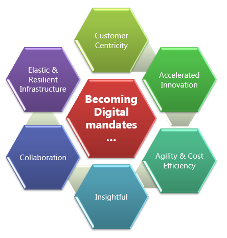
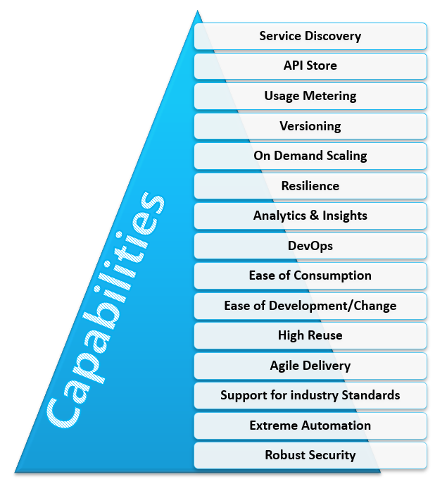
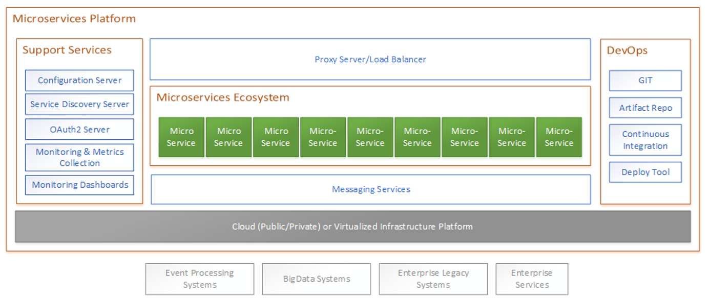
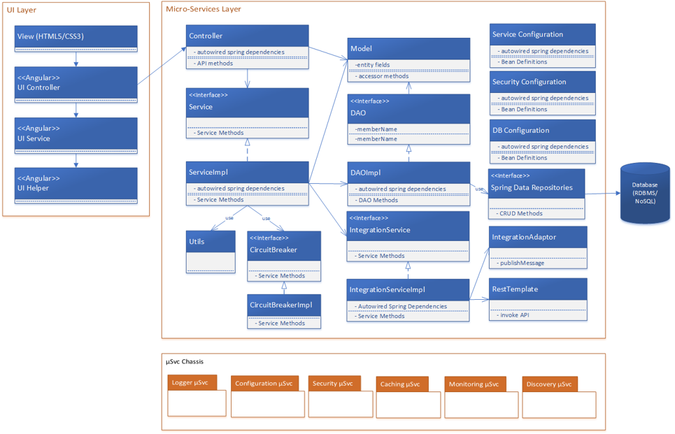
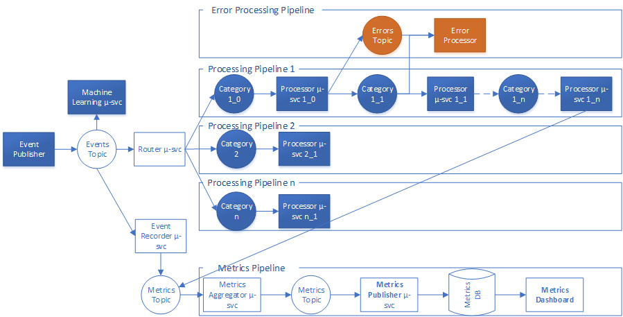
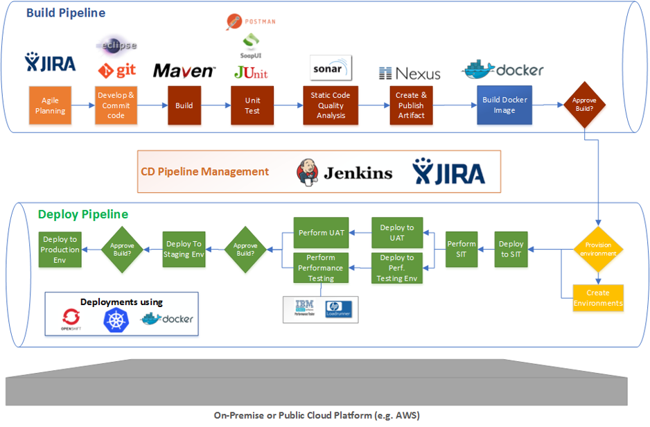

Digital Integration
Table of contents
Overview
This is a transformation journey that requires business transformation, building new architectural layers, adopting new architectural patterns, modernizing & moving existing workloads, exposing existing processes/services as APIs:
- Engage customers anytime anywhere
- Paradigm shift from business processes to customer journeys
- Offer a seamless customer experience beyond the original line of businesses
- Become agile to respond to market and regulatory changes
- Keeping innovation at the forefront - not just in business but also in technology (bringing new ideas to market rapidly)
- Extreme automation to reduce costs
Following image gives an overview of what it takes to become digital:
| Digital Mandates |
|---|
|  |
From an architecture & technology perspective this translates to:
- Building new architectural layers and patterns (Microservices, API, EDA, AI/insights)
- Modernization to remove impediments to rapid business transformation and innovation
- Adopting new technologies and development practices
- Reducing technical debt
- Exposing processes and data to partner and developer ecosystem to accelerate innovation (in a secure way ofcourse)
- Cloud migration/development
- Ensuring IT systems are resilient and available
- Automation of software development processes
What it means is a holistic approach is required for Digital transformation. i.e.:
- Running siloed initiatives (e.g. enhancing systems of engagement, modernizing applications) is not enough
- Just developing systems of engagement will not realize the objectives of digital transformation
- There is a need for well-defined delivery practices, architecture and standards
- Services & API are the backbone of any digital strategy. 80% of the effort is in Integration to backend systems and Process Digitisation
Key Questions to Ask
It is essential to understand client’s digital strategy and their progress before proposing changes or revamping their strategy. Key questions to ask here are:
- What is your modernization strategy?
- What is your cloud strategy?
- What is your API strategy?
- Are you modernizing your applications using Microservices architectural style?
- How are you handling co-existence?
- How are you doing DevOps?
- What are you doing in terms of business process transformation? How are you automating them?
- What is your integration strategy?
IBM’s Approach
The core of any digital transformation program is the digital integration layer as depicted in the diagram below
| Digital Integration Layer |
|---|
 |
Following are the key capabilities that the digital integration layer should possess:
| Digital Integration Layer Capabilities |
|---|
|  |
Main Constituents of Digital Integration
There are 4 main constituents of digital integration:
- Business processes/Customer journeys
- Microservices fabric
- API
- Analytics (real-time and batch)
Microservices Fabric
Following is a conceptual view of the Microservices platform:
| Microservices Platform - Conceptual View |
|---|
|  |
Microservices need to provide multiple ways of invocation. Primarily:
- REST endpoints - these endpoints are then exposed as API endpoints on the API Gateway (or used to create APIs)
- EDA or Stream data processing endpoints - microservices can be chained together to develop stream data processing logic
Following picture depicts a typical Microservice development blueprint with REST :
| Microservices Development Blueprint |
|---|
|  |
Following picture depicts a typical way in which microservices are chained together to build stream data processing logic
| Streaming Data Processing |
|---|
|  |
DevOps
Following picture depicts a typical CI/CD pipeline
| DevOps - CI/CD |
|---|
|  |
References
- IBM Institute of Business Value white paper on Digital Transformation
- IBM’s Smarter Business Microsite